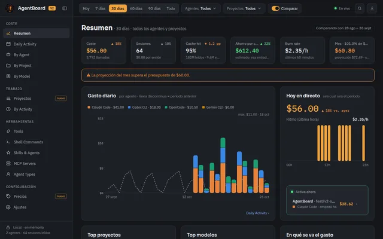
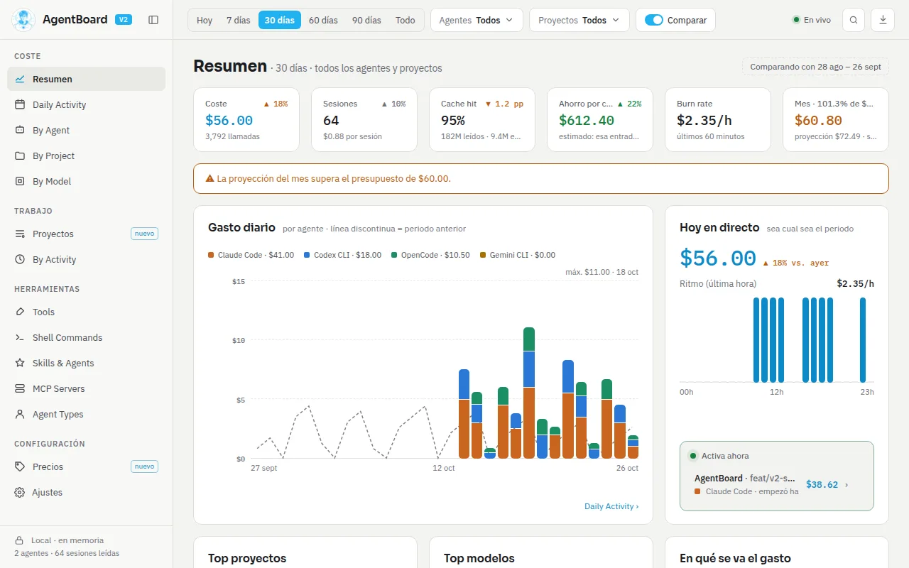
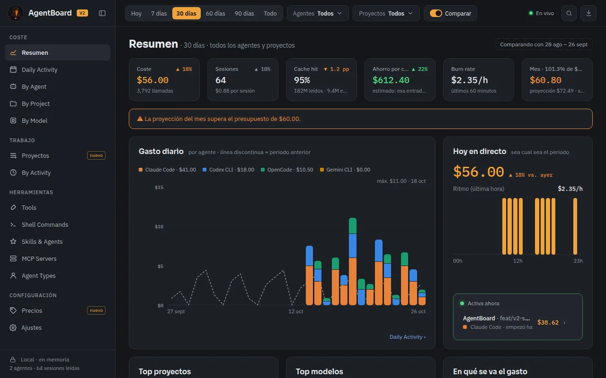
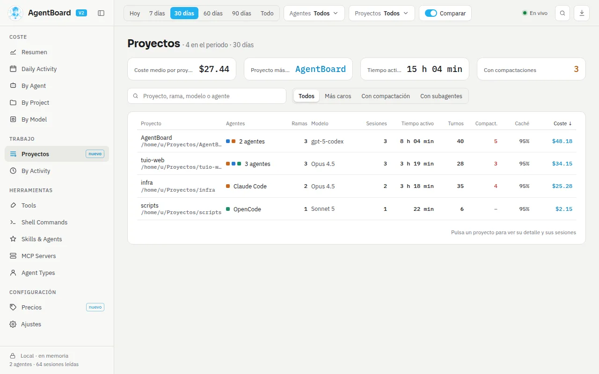
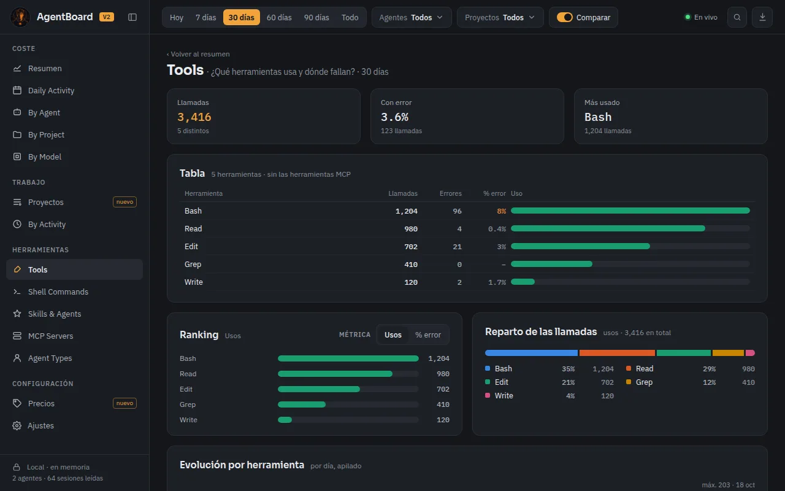
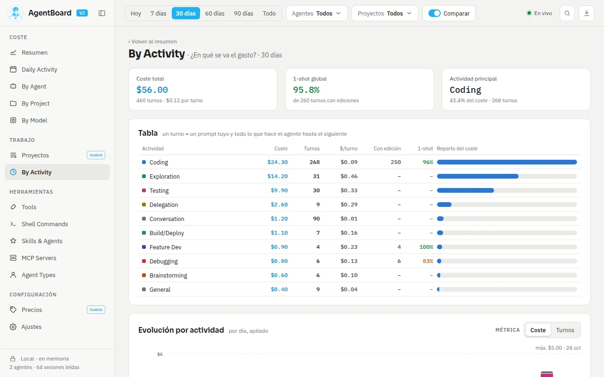
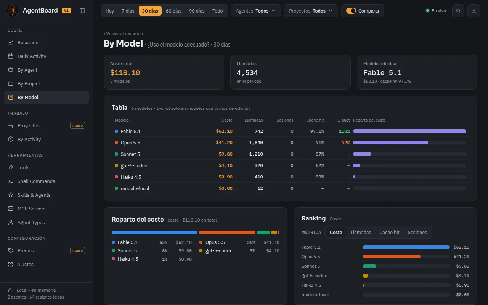

Backend
- Rust 2021
- Tauri 2.11
- rusqlite 0.32
- SQLite WAL
- notify 6.1
- serde
- chrono-tz
- tracing
App de escritorio · código abierto
El coste y la actividad de tus agentes de código, en local.
Reúne en una sola vista qué hacen Claude Code, Codex, Copilot, Cursor, Gemini y OpenCode (y cuánto cuestan) leyendo los logs que ya tienen en tu ordenador. Sin proxy, sin claves de API y sin telemetría: nada sale de la máquina.


El proyecto
Los agentes de código generan mucha actividad (llamadas al modelo, tokens, sesiones, herramientas, comandos) y un gasto repartido en cada herramienta. AgentBoard lee esos registros, los cruza y responde de un vistazo cuánto llevas gastado, qué modelo te sale más caro y en qué se va el tiempo del agente.
Gasto del día y del mes, proyección a fin de mes, precios editables y avisos al 80 % y al 100 %.
Coste por proyecto y por rama de git, con el detalle de cada sesión, sus turnos y compactaciones.
Reparto por actividad (coding, testing, debugging…), por agente y por modelo, con su cache hit.
Qué herramientas, comandos de shell, skills y servidores MCP se usan y cuáles fallan más.
Lo que escribe un agente aparece en menos de medio segundo, con 0 % de CPU en reposo.
Otro agente puede consultar estos datos en mitad de una conversación por Model Context Protocol.
La aplicación
Un panel lateral con los apartados agrupados en Coste, Trabajo, Herramientas y Configuración, en tema claro y oscuro.






Cómo está hecho
Un backend en Rust vigila las carpetas de logs de cada agente, lee solo lo nuevo y lo guarda en una caché SQLite reconstruible. La interfaz React pide a Tauri los datos que muestra; el servidor MCP reutiliza la misma lógica con su propia base en memoria.
Tecnologías
Las versiones que usa el repositorio, agrupadas por capa.
En tu máquina
Linux, Windows y macOS. Cada instalador incluye la app y el servidor MCP.
Desde la última versión publicada:
.AppImage, .deb o .rpm en Linux; .msi o
-setup.exe en Windows; .dmg universal en macOS.
En Linux, el AppImage no necesita instalación (requiere WebKitGTK 4.1):
chmod +x AgentBoard-App_*_linux_*.AppImage
./AgentBoard-App_*_linux_*.AppImageLos binarios de Windows y macOS van sin firmar: en Windows, «Más información» → «Ejecutar de todas formas»; en macOS, clic derecho sobre la app → «Abrir».
AgentBoard detecta los agentes instalados y lee sus logs. La primera vez lee todo el historial; las siguientes, solo lo nuevo. Elige el periodo, filtra por agente o proyecto y configura tus presupuestos.
Registra el servidor MCP para preguntarle a tu agente cuánto llevas gastado:
claude mcp add agentboard -- /usr/bin/agentboard-mcp